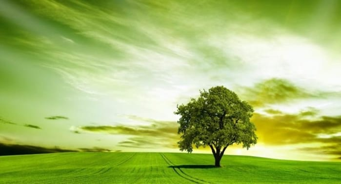
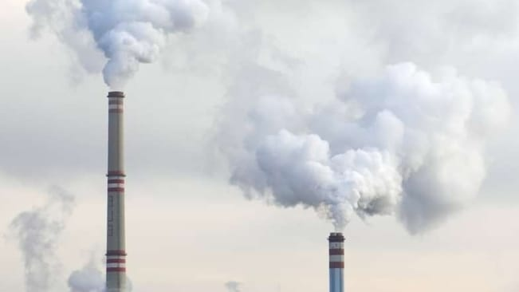
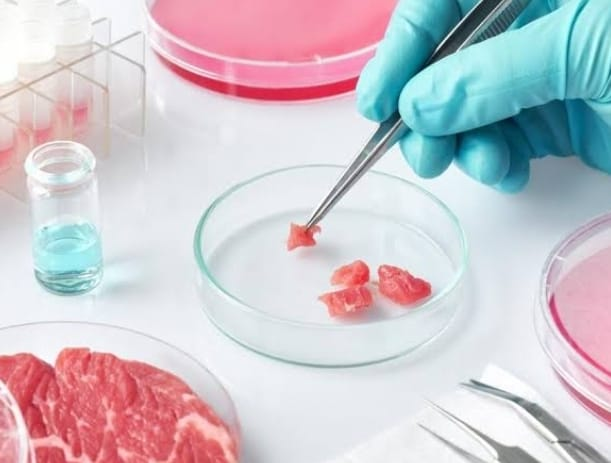
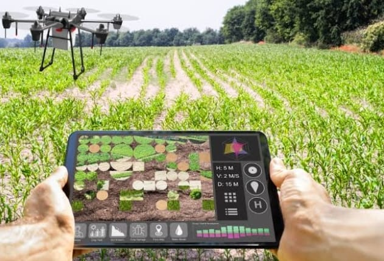
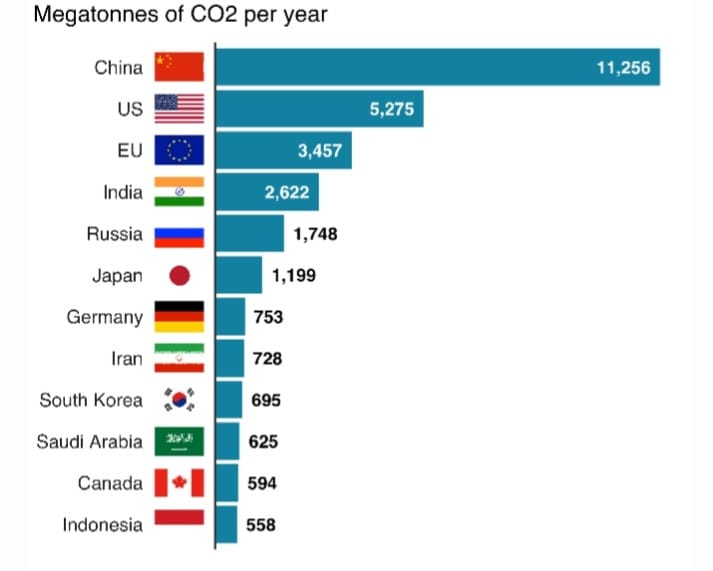
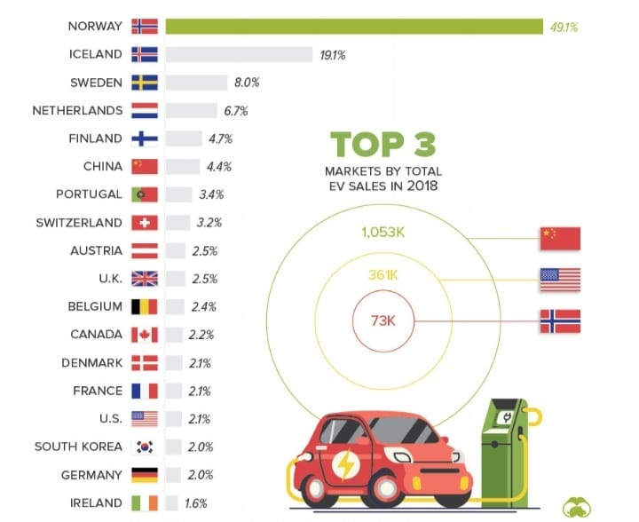

this website is created to bring awarness to peoples about climate change and its causes. also how to overcome it by new technologies.
Global warming
Why global warming happening ?
the changes in climate as a result of the rapid increase in the greenhouse effect of greenhouse gas accumulations released into the atmosphere by human activities such as burning fossil fuels, land use changes, deforestation, and industrial processes.
Atmosphere
What is happening in our environment today ?
High temperature extremes and heavy precipitation events are increasing, glaciers and snow cover are shrinking, and sea ice is retreating. Seas are warming, rising, and becoming more acidic, and flooding is become more frequent along the U.S. coastline.
Earth Warms
is ice melts due to sun ray's ?
The reflected sun rays are held by gases in the atmosphere, especially carbon dioxide, methane, and water vapor so that the earth heats up and this is called the greenhouse effect. Increasing the amount of these gases in the atmosphere increases the warming of the Earth.
FACTS ABOUT TREES

* Trees help reduce the effects of climate change.
* A mature tree can absorb more than 48 pounds of carbon dioxide each year, removing and storing the carbon while releasing the oxygen back into the air.
* In Chicago, trees remove more than 18,000 tons of air pollution each year.
* Trees Didn't Exist for the First 90% of Earth's History
* Scientists Thought This Dinosaur-Era Tree Went Extinct 150 Million Years Ago—but Then It Was Found Growing Wild in Australia
EMERGING TECHNONOGIES FOR THE FUTURE

CARBON CAPTURE TECHNOLOGY
the process of trapping carbon dioxide produced by burning fossil
fuels or other chemical or biological processes and storing it in
such a way that it is unable to affect the atmosphere, with the
aim of mitigating the effects of global warming. "large amounts of
greenhouse gases will need to be removed from the atmosphere via
carbon capture". They fall into three categories: post-combustion carbon capture (the primary method used in existing power plants), pre-combustion carbon capture (largely used in industrial processes), and oxy-fuel combustion systems.

LAB GROWN MEAT
If lab-grown meat takes off, it could have a huge impact on many areas. It would be more efficient, address one of the most influential reasons people go vegan, doesn't require the mass production of living animals and eliminates the need to slaughter animals. Billions of animals are killed each year for food.
“The cells from a single chicken allow us to cultivate the same amount of poultry that ordinarily would come from hundreds of thousands of traditionally farmed birds”
Overall, although advances in biotechnology sometimes come with stigma, lab-grown meat is an intriguing and potentially useful emerging product — especially for those of us concerned with improving animal welfare in the agriculture industry.

SMART AGRICULTURE
Food production, including animal husbandry, produces a massive amount of carbon emissions. These emissions will continue to rise due to increasing population and food demands. However, there is a growing interest among consumers and food brands to support low-GHG farming practices, including precision agriculture and smart farming. Startups now also offer automated farming systems that utilize much less land and water than conventional farming while ensuring profits.
CHARTS AND GRAPHS TO ANALYZE
GLOBAL GREEN HOUSE EMISSION IN VARIUOS FILEDS

CO2 EMISSION BY COUNTRY

MOST EV VEHICLE USED COUNTRY LIST
@copyrights2023
This website is created to enhance the climate condition by peoples and to invlove peoples to create a better socity for the future